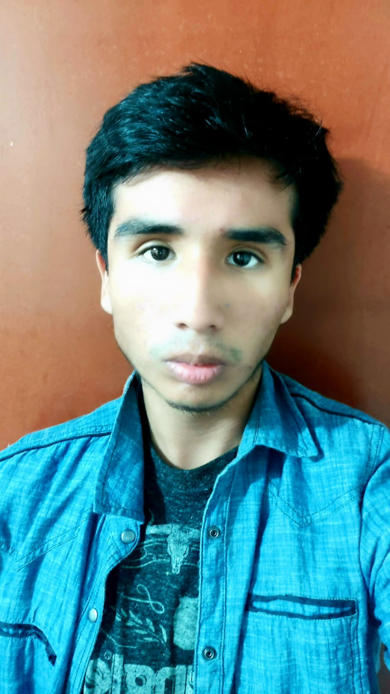

Hola! Soy Gabriel Arrieta Bustinza, un entusiasta estudiante de Ingeniería de Software inmerso en el emocionante mundo del desarrollo. Mi enfoque se centra en el desarrollo web, donde mi pasión por crear experiencias digitales toma forma a través de la combinación precisa de HTML, CSS y JavaScript.
En mi viaje como estudiante, no solo aprendo los fundamentos, sino que también aplico mis conocimientos en proyectos universitarios de desarrollo web. Estos desafíos han sido el campo de juego perfecto para perfeccionar mis habilidades, explorar nuevas ideas y entender la importancia de un código limpio y eficiente.
Ademas de mi devoción por el desarrollo web, encuentro fascinación en la creación de videojuegos utilizando la potencia de Unity. Visualizo un futuro donde mi experiencia en Ingeniería de Software se funde con mi pasión por la narrativa interactiva, aspirando a desarrollar experiencias envolventes y cautivadoras para los jugadores.
Estoy ansioso por unirme a un equipo donde pueda aplicar mis habilidades y contribuir con mi creatividad. Mi objetivo es seguir aprendiendo y creciendo en el campo del desarrollo, aportando soluciones innovadoras y siendo parte de proyectos que desafíen y motiven mi pasión por la programación. ¡El viaje apenas comienza, y estoy emocionado por ser parte del futuro de la tecnología!
En mi tiempo libre, me sumerjo en la emocionante cancha de baloncesto y el campo de fútbol de mi universidad, donde el espíritu competitivo y la camaradería se fusionan. Soy un verdadero fanático de estos deportes, ¡cada juego es una nueva aventura!
Cuando no estoy en el terreno de juego, me sumerjo en el emocionante universo de los videojuegos. Desde partidas intensas en Overwatch 2 y Fortnite hasta explorar los misterios de Elden Ring, encuentro en los videojuegos una fuente constante de inspiración y entretenimiento.
Además, me encanta compartir mi pasión por los videojuegos a través de transmisiones en mi cuenta de Twitch. ¡Acompáñame en mis aventuras virtuales y sé parte de la comunidad ✨! Arkuzzz
No solo me conformo con lo académico; siempre estoy en busca de nuevos conocimientos. Mi amor por la programación se extiende más allá de las aulas universitarias; invierto mi tiempo aprendiendo de forma autodidacta mediante cursos en línea y vídeos en YouTube.
Estoy emocionado por el futuro y la oportunidad de contribuir con mi pasión y habilidades al mundo del desarrollo de software.
Volver al Inicio